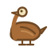

Każdy piktogram „co wypatrzeć w terenie", nazwany kodem + miejscem (nie tym, co na grafice). Podpis = miejsce; mniejsza linia = kod kanoniczny i nazwa pliku. Zielone = łańcuchowe (15, krytyczne). Detal jest osobną warstwą od glifu nawigacyjnego (z1-glify-globalne.md).
Strefa NE — Nowe Miasto (łańcuchowe ✅)
Piernikarka ✅N01 · piernikn01-piernikarka.svg

Przekupka ✅N02 · gęśn02-przekupka.svgApteka Pod Lwem ✅ terenN04 · lew nad drzwiamin04-apteka-lew.svgKościół św. Jakuba ✅ terenN05 · bazylika / łukin05-kosciol-jakuba.svgBaj Pomorski ✅N06 · fasada-szafan06-baj-pomorski.svg
Strefa C — Rynek Staromiejski (łańcuchowe ✅)
Pomnik Kopernika ✅C01 · astrolabiumc01-kopernik.svgOsiołek ✅C02 · osioł / pręgierzc02-osiolek.svgPies Filuś ✅C03 · melonikc03-pies-filus.svgRatusz Staromiejski ✅ ✕C09C04 · wieża bez hełmuc04-ratusz.svgKamienica Pod Gwiazdą ✅C06 · gwiazdac06-pod-gwiazda.svgDwór Artusa ✅C07 · herb / tarczac07-dwor-artusa.svgKościół NMP ✅ ✕N05C08 · kościół bez wieżyc08-kosciol-nmp.svgKatedra św. Janów ✅ ✕C04C09 · zegar 1 wskazówkac09-katedra-janow.svg